Demo CRM — отчёт GUI-самотеста
Тест выполнен самим приложением: оно вело собственное окно по шагам, рисовало номер шага на плашке и снимало себя. Шаги 15–18 — реальный вызов SDK: нажата настоящая кнопка «Создать из реестра», запущен Contragenti; шаги 19–33 — разделы CRM: клиенты, контакты, лиды, сделки, номенклатура, заказы с проводкой остатков, календарь, главная.
Launcher: F:\grok\contragents data gov\company_search.py
| # | Шаг | Статус | Проверка | Снимки |
|---|---|---|---|---|
| 01 | Окно входа закрывает данные до авторизации | OK | панель входа показана | 01_login.png |
| 02 | Неверный пароль не пускает в программу | OK | Неверный пользователь или пароль. | 02_login_bad.png |
| 03 | Язык интерфейса из внешнего lang.json: румынский (основной) | OK | файл lang.json; nav.clients = «Clienți», nav.orders = «Comenzi» | 03_lang_ro.png |
| 04 | Переключение на английский меняет строки из того же файла | OK | nav.clients = «Clients», в реестре Language = «en» | 04_lang_en.png |
| 05 | Выбор языка сохраняется в реестре Windows (HKCU\Software\DemoCRM) | OK | в реестре Language = «ru», nav.clients = «Клиенты» | 05_lang_registry.png |
| 06 | Значения справочников переводятся, а в базе остаются каноническими | OK | order_status[1] в ru = «Подтверждён», этап 3 = «Ожидает аванс» | 06_enum_translate.png |
| 07 | Вход с верным паролем открывает программу | OK | пользователь «admin»; Добро пожаловать, admin. | 07_login_ok.png |
| 08 | Стартовое окно, база пуста | OK | в списке 0, в базе 0 | 08_start.png |
| 09 | Импорт карточки UNISIM-SOFT из XML Contragenti | OK | результат 0, в списке 1, сообщение зелёное=True | 09_import_unisim.png |
| 10 | Импорт карточки ALFA-VIS COM | OK | результат 0, в списке 2 | 10_import_alfavis.png |
| 11 | Повторный импорт UNISIM — отсечён как дубликат | OK | результат 1, в базе 2, сообщение янтарное=True | 11_duplicate.png |
| 12 | Фильтр «ALFA» оставляет одну запись | OK | в списке 1 | 12_filter_alfa.png |
| 13 | Фильтр сброшен — снова две записи | OK | в списке 2 | 13_filter_clear.png |
| 14 | Панель настроек раскрывается внутри окна (без модального диалога) | OK | сообщение: Путь к Contragenti и адрес ERP — затем «Сохранить». | 14_settings_open.png |
| 15 | Панель настроек скрыта повторным нажатием | OK | 15_settings_close.png | |
| 16 | Навигация: «Рабочий стол» — большие плитки этапов процесса | OK | 16_workspace_empty.png | |
| 17 | Навигация: раздел «Лиды» открывается — пустой список с кнопками «Создать лид» и «В клиенты» | OK | раздел=6, записей 0 | 17_nav_leads_empty.png |
| 18 | Навигация: возврат в «Клиенты» | OK | 18_accounts.png | |
| 19 | «Удалить» без выбранной строки — предупреждение, ничего не удалено | OK | в базе 2, сообщение янтарное=True | 19_delete_noselect.png |
| 20 | «Удалить» с выбранной строкой — просьба подтвердить, база не тронута | OK | в базе 2, сообщение янтарное=True | 20_delete_confirm_ask.png |
| 21 | Повторное «Удалить» — клиент ALFA-VIS удалён (останется UNISIM) | OK | в базе 1, в списке 1, сообщение зелёное=True | 21_delete_done.png |
| 22 | Фильтр «ALFA-VIS COM» введён — по нему SDK запустит Contragenti | OK | launcher: F:\grok\contragents data gov\company_search.py | 22_sdk_filter.png |
| 23 | Реальный вызов SDK: Contragenti запущен, нашёл ALFA-VIS (кэш date.gov.md или портал) и вернул XML-карточку | OK | ожидание 0 с, снимков во время работы 2, в базе 1 → 2, сообщение зелёное=True; | 23_sdk_added.png +2 |
| 24 | Карточка из Contragenti в списке CRM (адрес, форма, администратор — данные реестра) | OK | в списке 2 | 24_sdk_list.png |
| 25 | Повторный вызов SDK — та же карточка отсечена как дубликат, база не выросла | OK | ожидание 0 с, в базе 2, сообщение янтарное=True; | 25_sdk_duplicate.png +2 |
| 26 | Окно CRM не зависает, пока открыт Contragenti: обработчик ожидания отработал | OK | тактов ожидания 15 (по 200 мс), сообщение: Выбор отменён: Контрагент не выбран. | 26_sdk_responsive.png |
| 27 | Клиенты: в карточке сохранены тип, телефон, e-mail и контактное лицо | OK | Карточка клиента «Societatea cu Răspundere Limitată ALFA-VIS COM» сохранена. | 27_client_card.png |
| 28 | Контакты: создан контакт «Yevgeny Bubis», привязан к клиенту ALFA-VIS | OK | контактов 1; Добавлено: контакт «Yevgeny Bubis». | 28_contact_new.png |
| 29 | Лиды: создан лид «Agro-Prim SRL» — в работе, источник «Выставка» | OK | лидов 1 | 29_lead_new.png |
| 30 | Лиды: «В клиенты» — создан клиент Agro-Prim SRL, статус лида «Конвертирован» | OK | клиентов 2 → 3, статус лида: Конвертирован | 30_lead_convert.png |
| 31 | Сделки: создана сделка 48 500 MDL для Agro-Prim на этапе «Предложение» | OK | сделок 1 | 31_deal_new.png |
| 32 | Сделки: этап переведён в «Выиграна» (воронка) | OK | этап в базе: Выиграна | 32_deal_won.png |
| 33 | Номенклатура: товар (остаток 5), услуга (час) и изделие собственного производства | OK | позиций 3 | 33_items.png |
| 34 | Заказы: заказ на продажу №0001 — две строки (2 насоса + 8 ч монтажа), итого 27 800 MDL | OK | строк 2, итого 27800.00 | 34_order_lines.png |
| 35 | Заказы: статус «Выполнен» + «Провести» — остаток насосов списан 5 → 3 | OK | остаток T-001 = 3; Заказ проведён: списано со склада по 2 строкам | 35_order_posted.png |
| 36 | Заказы: производственный заказ №0002 проведён — оприходовано 2 изделия (0 → 2) | OK | остаток P-001 = 2; Заказ проведён: оприходовано изделий по 1 строкам | 36_order_production.png |
| 37 | Календарь: звонок (просрочен на 2 дня) и встреча через 3 дня | OK | открытых задач 2 | 37_tasks.png |
| 38 | Календарь: фильтр «Просроченные» — одна задача | OK | в списке 1 | 38_tasks_overdue.png |
| 39 | Календарь: «Выполнено» — просроченная задача закрыта, список пуст | OK | в списке 0; Задача отмечена выполненной. | 39_task_done.png |
| 40 | Рабочий стол: плитки показывают процесс — два заказа исполнены и закрыты | OK | ожидает аванс=0, в работе=0, готово к отгрузке=2, ждём оплату=0, закрыто=0 | 40_workspace.png |
| 41 | Генератор тестовых данных: клиентов 15, контактов 20, лидов 12, сделок 21, номенклатуры 18, заказов 21 (строк 38), задач 24, проектов 10 (задач по проектам 100) — плитки процесса заполнились | OK | аванс=1, в работе=6, к отгрузке=4, ждём оплату=4, закрыто=3 | 41_seed_workspace.png |
| 42 | Плитка «Отгружено — ждём оплату» открывает «Заказы» с этим фильтром | OK | в списке 4, по условию этапа 4 | 42_tile_drilldown.png |
| 43 | Связь с ERP una.md по HTTP-API хаба: результат проверки виден в полосе ERP | OK | ERP недоступна: Error sending data: (12029) A connection with the server could not be established | 43_erp_check.png |
| 44 | Заказы на полном наборе: продажа / услуга / производство, все статусы | OK | в списке 23, в базе 23 | 44_seed_orders.png |
| 45 | Номенклатура на полном наборе: пресет «Нет на складе» | OK | без остатка 3 из 21 | 45_seed_items.png |
| 46 | Календарь на полном наборе: просроченные задачи выделены пресетом | OK | просроченных 20 | 46_seed_tasks_overdue.png |
| 47 | Канбан «Заказы»: пять колонок процесса, карточки разложены по этапам | OK | колонок 5; по этапам: 1 / 6 / 4 / 4 / 3 | 47_kanban_orders.png |
| 48 | Канбан: карточка перенесена «В работе» → «Готово к отгрузке», статус в базе изменён | OK | колонка 2, статус «Выполнен», этап 5 | 48_kanban_move.png |
| 49 | Канбан: «← Назад» возвращает карточку на прежний этап | OK | колонка 1, этап 4 | 49_kanban_back.png |
| 50 | Канбан: карточка перетащена мышью из «В работе» в «Отгружено — ждём оплату» | OK | в колонке «ждём оплату» 4 → 5, дата отгрузки «2026-09-06», этап 6 | 50_kanban_drag.png |
| 51 | Канбан: перетаскивание работает в обе стороны — дата отгрузки снята | OK | дата отгрузки «», этап 4 | 51_kanban_drag_back.png |
| 52 | Канбан «Задачи»: колонки по срокам — просрочено / сегодня / позже / выполнено | OK | колонок 4; просрочено 20, сегодня 3, позже 49, выполнено 54 | 52_kanban_tasks.png |
| 53 | Канбан: карточка информативна — значок вида, клиент, сумма, прогресс оплаты, бейдж срока | OK | «№0010» $ Продажа · CENTRUL DE ELABORARE UNISIM-SOFT S.R.L. · оплачено 672 из 1680 · бейдж «−17 д» | 53_kanban_card_info.png |
| 54 | Канбан: перенос анимирован — карточка перелетает в новую колонку и вспыхивает | OK | кадров анимации 17, этап 4 | 54_kanban_anim.png |
| 55 | Бизнес-процесс: схема «Сделка → заказ → оплата» из processes.json — дорожки, узлы, развилки, стрелки | OK | процессов 3, узлов 13, связей 14 | 55_process_scheme.png |
| 56 | Бизнес-процесс: щелчок по этапу «В работе» показывает те же карточки, что колонка канбана | OK | узел «В работе / производство»: карточек 6, в базе на этапе 6, запаздывает 3 | 56_process_node_click.png |
| 57 | Бизнес-процесс: карточка перетащена мышью на этап «Готово к отгрузке» — этап в базе изменён | OK | на этапе «готово» было 4, стало 5; этап заказа 5; кадров анимации 17 | 57_process_drag.png |
| 58 | Бизнес-процесс: описание этапа отредактировано и сохранено обратно в JSON | OK | файл processes_test.json, 23281 байт, описание «Заказ подтверждён, выставлен счёт на ава…» | 58_process_desc_saved.png |
| 59 | Календарь месячной сеткой: задачи разложены по дням | OK | месяц «сентябрь 2026», задач в месяце 66, сегодня 4 | 59_calendar_month.png |
| 60 | Календарь: задача перетащена мышью на три дня вперёд | OK | срок в базе «2026-09-09», на дне 09.09 задач 5 → 6 | 60_calendar_drag.png |
| 61 | Календарь: листание месяцев кнопками ‹ › | OK | следующий «октябрь 2026», текущий «сентябрь 2026» | 61_calendar_next_month.png |
| 62 | План работ (Гант): производственные заказы и их операции на шкале времени | OK | строк 24, из них работ 15, просрочено заказов 4; период 06.07.2026 — 22.09.2026 | 62_gantt_production.png |
| 63 | План работ: полоса заказа перетащена мышью на 5 дней вперёд — даты в базе сдвинулись | OK | было 08.07–12.08, стало 13.07–17.08 (в базе 2026-07-13) | 63_gantt_drag_move.png |
| 64 | План работ: за правый край полосы растянут только срок, дата заказа не тронута | OK | срок 17.08 → 24.08, начало осталось 13.07 | 64_gantt_drag_resize.png |
| 65 | План работ: фильтр «Все заказы» — строк становится больше | OK | строк 52, работ 32 | 65_gantt_all.png |
| 66 | Проекты: панно с логотипом, выжиг поздравлений, стенды, медали — тендеры с авансом и без | OK | проектов 10; в производстве 2, тендеров 1, проиграно 1, запаздывает 2 | 66_projects_list.png |
| 67 | Проект → «Задачи проекта»: доска задач по этапам — новая / в работе / ожидание / проверка / готово | OK | проект 1, колонок 5; новых 4, в работе 1, ожидание 0, проверка 0, готово 6 | 67_project_tasks_board.png |
| 68 | Задача перетащена «Новая» → «В работе»: этап в базе изменён, флаг «выполнено» не тронут | OK | задача 34: этап «В работе» | 68_task_drag_inwork.png |
| 69 | Задача перетащена в «Готово»: флаг «выполнено» выставлен сам — этап и флаг суть одно состояние | OK | задача 34: этап «Готово», done = 1 | 69_task_drag_done.png |
| 70 | Канбан «Проекты»: девять этапов от тендера до закрытия, проигранные тендеры отдельно | OK | колонок 9; тендер 1, договор 1, аванс 1, дизайн 1, производство 2, сдача 1, оплата 1, закрыт 1, проигран 1 | 70_kanban_projects.png |
| 71 | Проект перетащен «Тендер» → «Договор» (тендер выигран): этап в базе изменён | OK | проект 9: этап «Договор» | 71_kanban_project_drag.png |
| 72 | Бизнес-процесс «Проект: тендер → аванс → производство → сдача → оплата»: узел «Производство» показывает его проекты | OK | узлов 11, связей 12; в производстве 2, запаздывает 1 | 72_process_project.png |
| 73 | План работ «Проекты и задачи»: проект и его шаги по датам, готовые зелёным, просроченные красным, стрелки «после задачи» | OK | строк 107, из них задач 98, просроченных проектов 2; период 06.07.2026 — 18.10.2026 | 73_gantt_projects.png |
| 74 | План работ: задача проекта перетащена мышью на 3 дня — план и срок в базе сдвинулись | OK | задача 48: срок 2026-07-08 → 2026-07-11 | 74_gantt_task_drag.png |
| 75 | Отчёт «Проекты: тендеры, авансы, задачи» — предпросмотр и выгрузка в Excel и PDF | OK | строк 11; projects_2026-09-06.xlsx, projects_2026-09-06.pdf | 75_report_projects.png |
| 76 | Отчёты: «Процесс исполнения заказов» — предпросмотр по этапам | OK | строк 9, колонок 6 | 76_report_process.png |
| 77 | Выгрузка отчёта в Excel и PDF | OK | process_2026-09-06.xlsx (3227 байт, zip=True); process_2026-09-06.pdf (1090649 байт, %PDF=True) | 77_report_export.png |
| 78 | Отчёт «Дебиторская задолженность»: строки есть, выгружен в оба формата | OK | строк 5; receivables_2026-09-06.xlsx, receivables_2026-09-06.pdf | 78_report_receivables.png |
| 79 | Отчёт «Остатки номенклатуры»: остатки после проводок, выгружен в оба формата | OK | позиций 16; stock_2026-09-06.xlsx, stock_2026-09-06.pdf | 79_report_stock.png |
| 80 | Итоговое состояние окна: клиенты из SDK, лида и генератора | OK | в базе 18 клиентов | 80_final.png |
01Окно входа закрывает данные до авторизации — OK
панель входа показана
Строка сообщений: База: shots_gui\test_clients.db | клиентов: 0
после шага: 01_login.png
{kind=link}
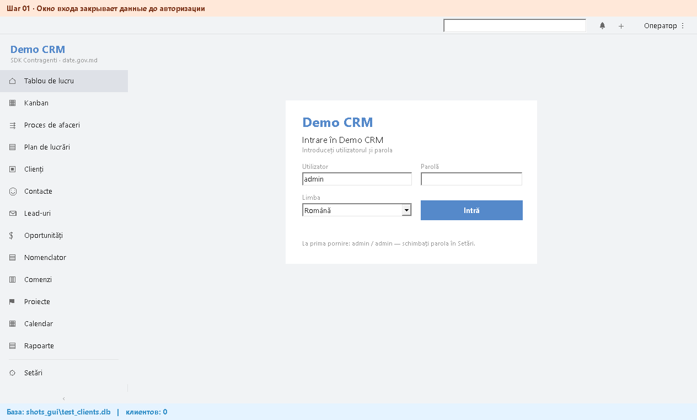
02Неверный пароль не пускает в программу — OK
Неверный пользователь или пароль.
Строка сообщений: Неверный пользователь или пароль.
после шага: 02_login_bad.png
{kind=link}
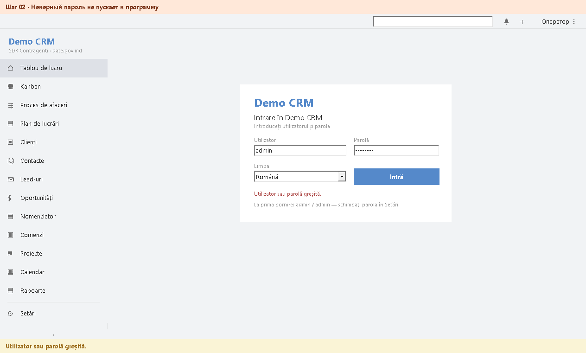
03Язык интерфейса из внешнего lang.json: румынский (основной) — OK
файл lang.json; nav.clients = «Clienți», nav.orders = «Comenzi»
Строка сообщений: Неверный пользователь или пароль.
после шага: 03_lang_ro.png
{kind=link}
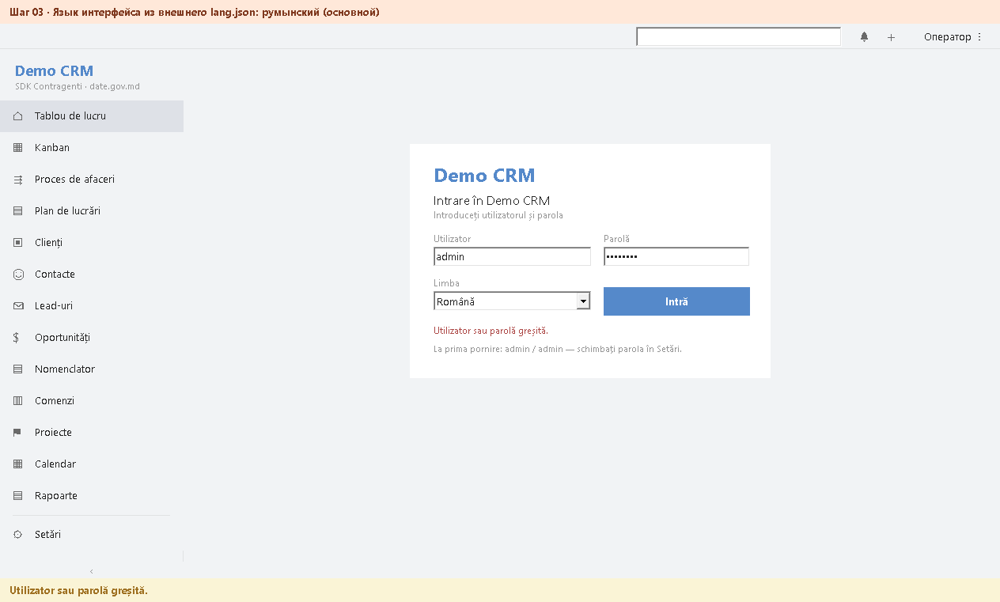
04Переключение на английский меняет строки из того же файла — OK
nav.clients = «Clients», в реестре Language = «en»
Строка сообщений: Неверный пользователь или пароль.
после шага: 04_lang_en.png
{kind=link}
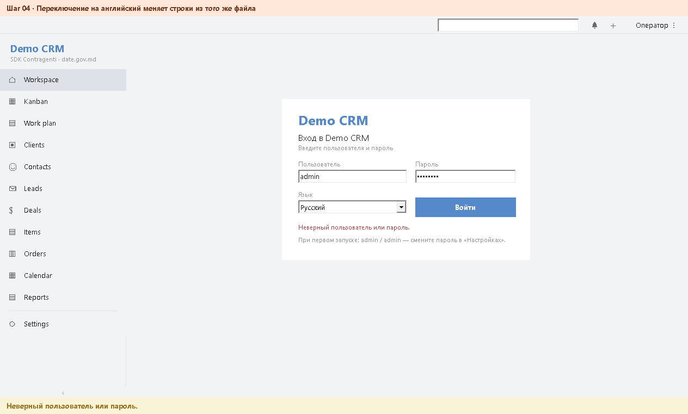
05Выбор языка сохраняется в реестре Windows (HKCU\Software\DemoCRM) — OK
в реестре Language = «ru», nav.clients = «Клиенты»
Строка сообщений: Неверный пользователь или пароль.
после шага: 05_lang_registry.png
{kind=link}
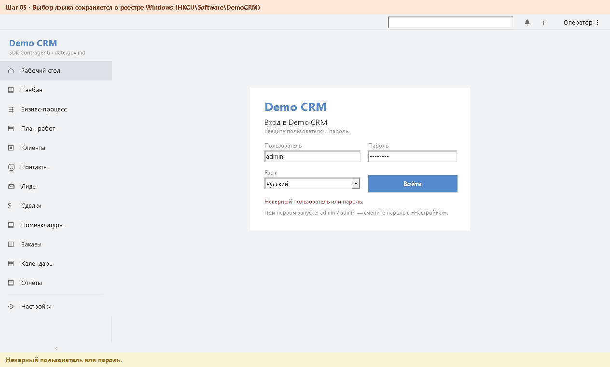
06Значения справочников переводятся, а в базе остаются каноническими — OK
order_status[1] в ru = «Подтверждён», этап 3 = «Ожидает аванс»
Строка сообщений: Неверный пользователь или пароль.
после шага: 06_enum_translate.png
{kind=link}
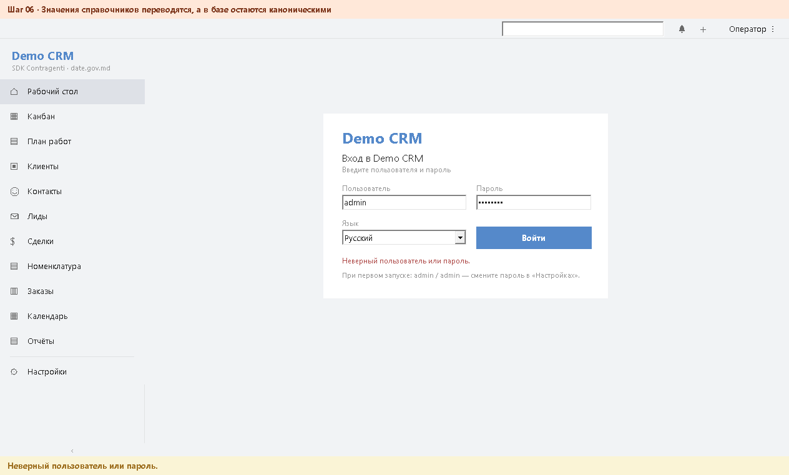
07Вход с верным паролем открывает программу — OK
пользователь «admin»; Добро пожаловать, admin.
Строка сообщений: Добро пожаловать, admin.
после шага: 07_login_ok.png
{kind=link}
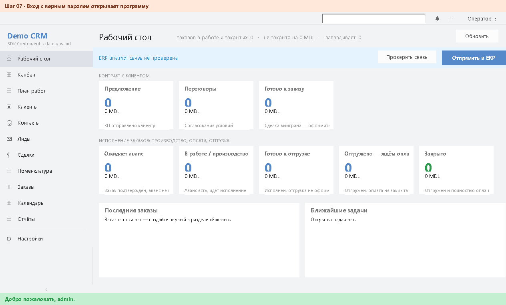
08Стартовое окно, база пуста — OK
в списке 0, в базе 0
Строка сообщений: Добро пожаловать, admin.
после шага: 08_start.png
{kind=link}
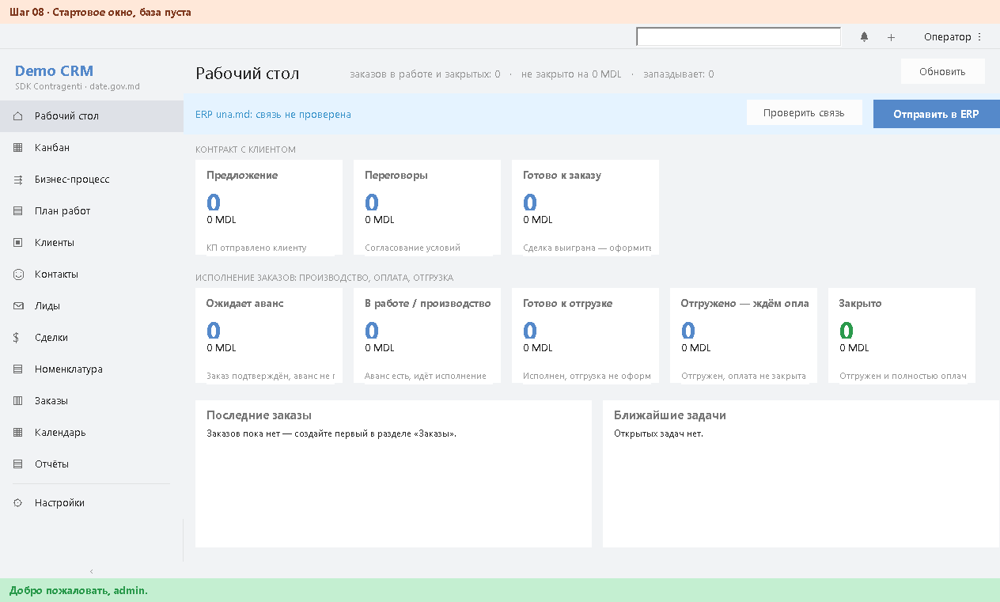
09Импорт карточки UNISIM-SOFT из XML Contragenti — OK
результат 0, в списке 1, сообщение зелёное=True
Строка сообщений: Добавлен клиент: CENTRUL DE ELABORARE UNISIM-SOFT S.R.L. (IDNO 1003600116460)
после шага: 09_import_unisim.png
{kind=link}
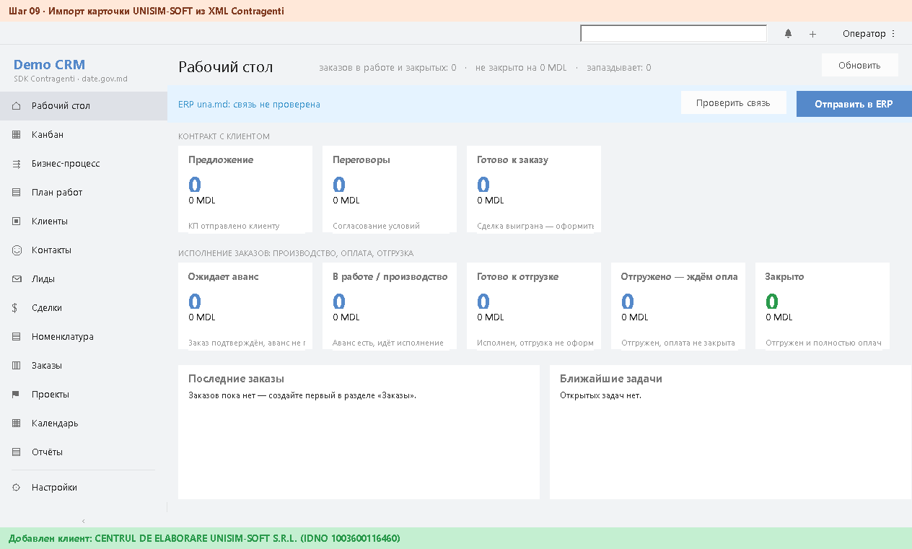
10Импорт карточки ALFA-VIS COM — OK
результат 0, в списке 2
Строка сообщений: Добавлен клиент: Societatea cu Raspundere Limitata ALFA-VIS COM (IDNO 1017600018242)
после шага: 10_import_alfavis.png
{kind=link}
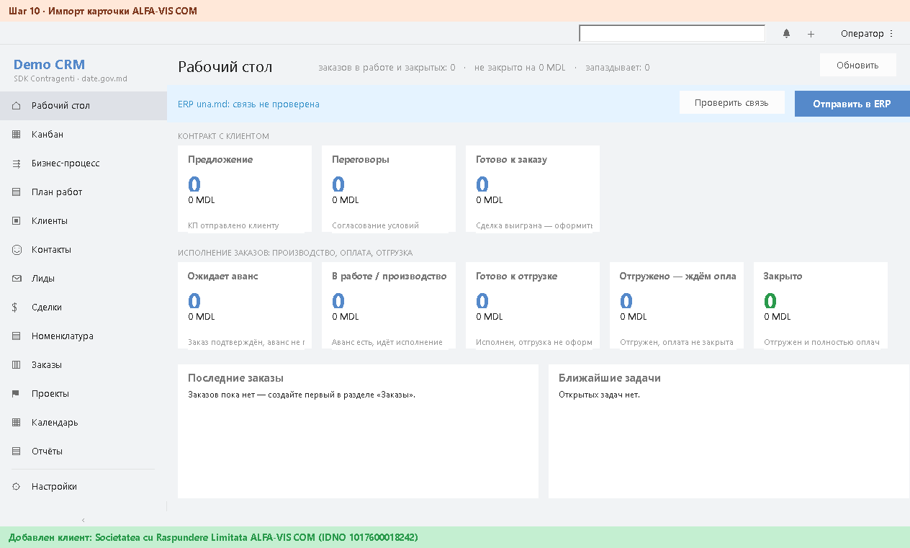
11Повторный импорт UNISIM — отсечён как дубликат — OK
результат 1, в базе 2, сообщение янтарное=True
Строка сообщений: Уже в базе: CENTRUL DE ELABORARE UNISIM-SOFT S.R.L. (IDNO 1003600116460)
после шага: 11_duplicate.png
{kind=link}
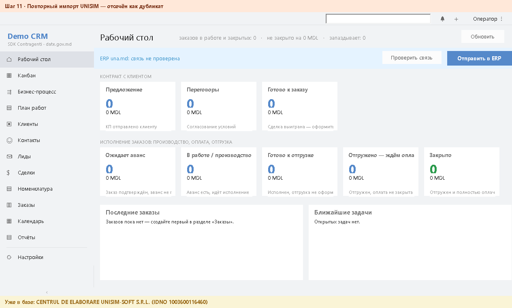
12Фильтр «ALFA» оставляет одну запись — OK
в списке 1
Строка сообщений: Фильтр «ALFA»: показано 1 из 2
после шага: 12_filter_alfa.png
{kind=link}
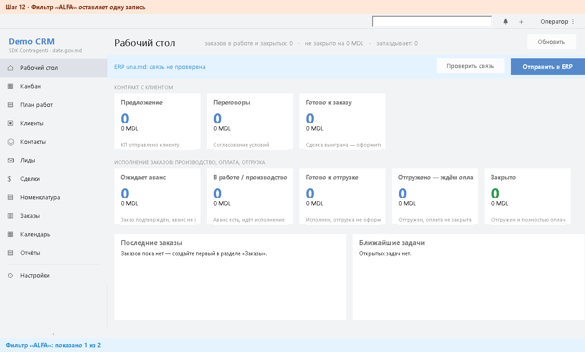
13Фильтр сброшен — снова две записи — OK
в списке 2
Строка сообщений: Фильтр «ALFA»: показано 1 из 2
после шага: 13_filter_clear.png
{kind=link}
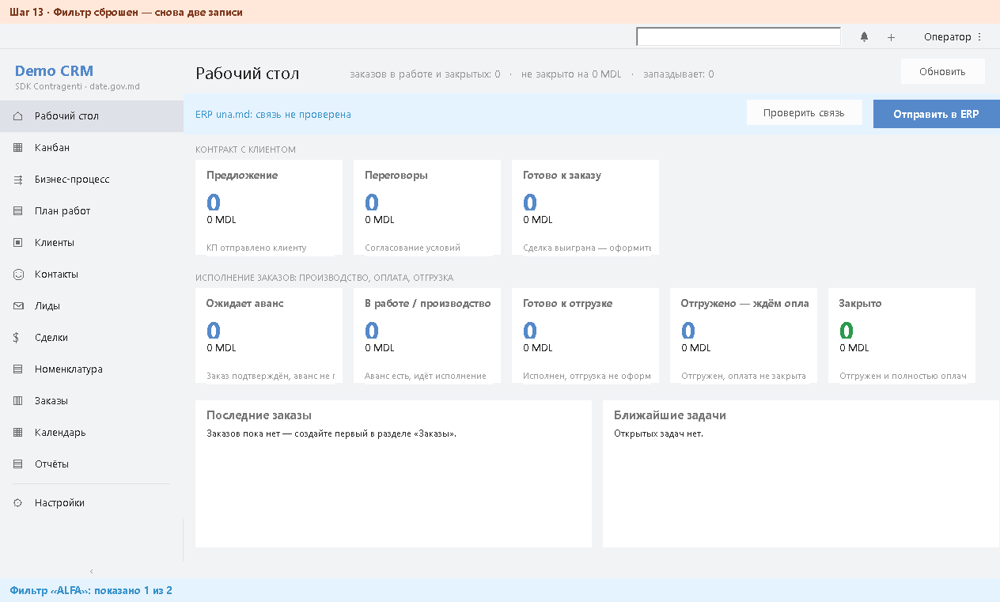
14Панель настроек раскрывается внутри окна (без модального диалога) — OK
сообщение: Путь к Contragenti и адрес ERP — затем «Сохранить».
Строка сообщений: Путь к Contragenti и адрес ERP — затем «Сохранить».
после шага: 14_settings_open.png
{kind=link}
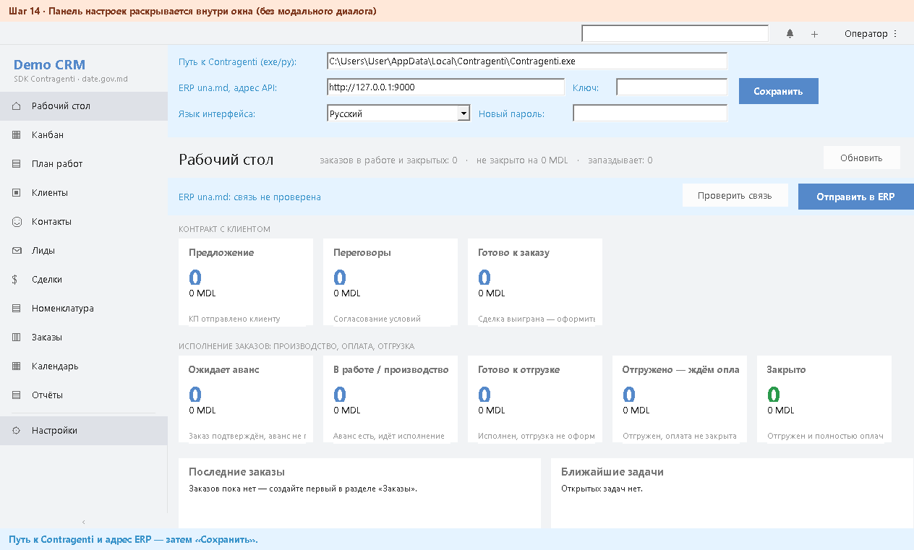
15Панель настроек скрыта повторным нажатием — OK
Строка сообщений: Путь к Contragenti и адрес ERP — затем «Сохранить».
после шага: 15_settings_close.png
{kind=link}
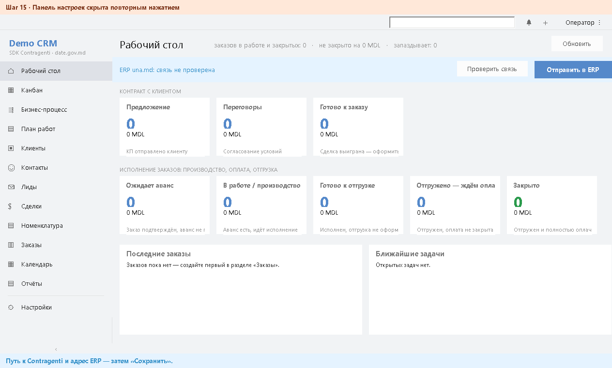
16Навигация: «Рабочий стол» — большие плитки этапов процесса — OK
Строка сообщений: Путь к Contragenti и адрес ERP — затем «Сохранить».
после шага: 16_workspace_empty.png
{kind=link}
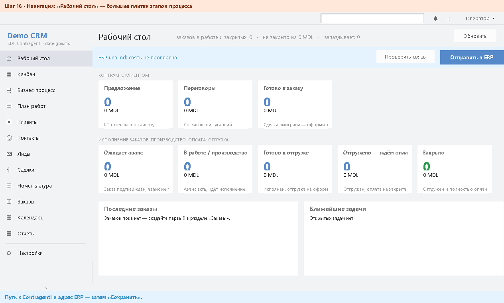
17Навигация: раздел «Лиды» открывается — пустой список с кнопками «Создать лид» и «В клиенты» — OK
раздел=6, записей 0
Строка сообщений: Путь к Contragenti и адрес ERP — затем «Сохранить».
после шага: 17_nav_leads_empty.png
{kind=link}
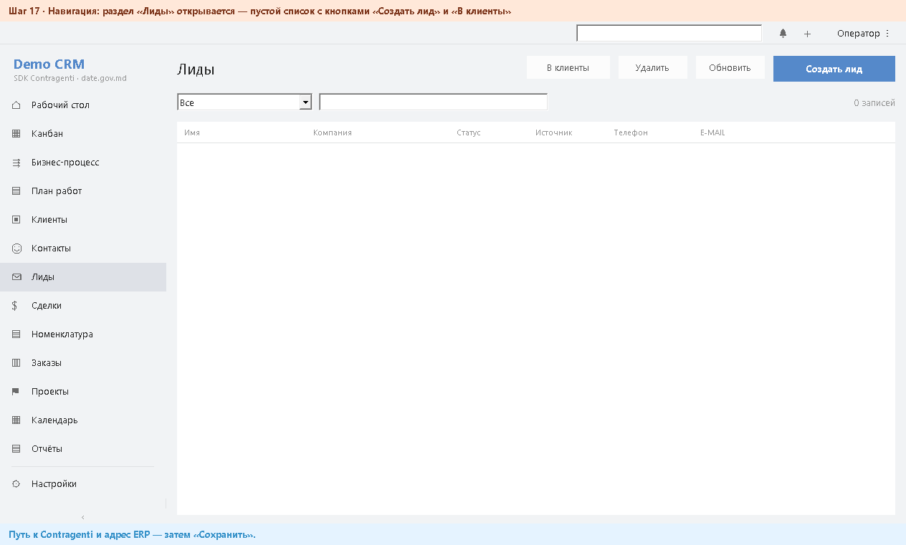
18Навигация: возврат в «Клиенты» — OK
Строка сообщений: Путь к Contragenti и адрес ERP — затем «Сохранить».
после шага: 18_accounts.png
{kind=link}
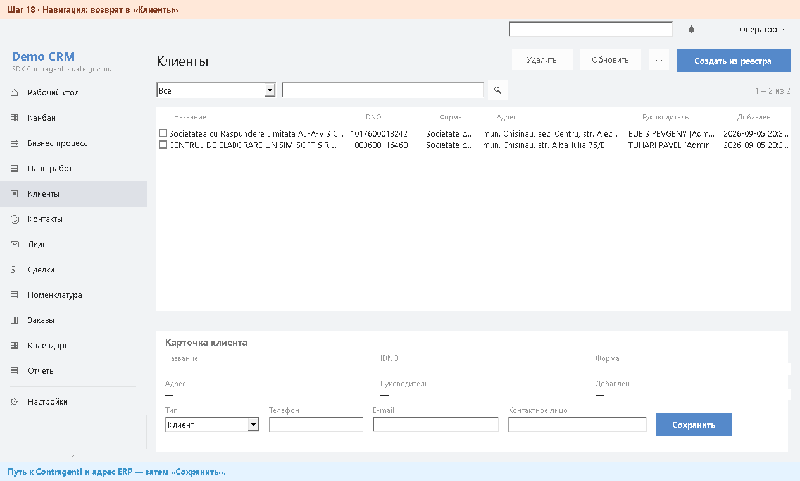
19«Удалить» без выбранной строки — предупреждение, ничего не удалено — OK
в базе 2, сообщение янтарное=True
Строка сообщений: Выберите клиента в списке, затем нажмите «Удалить».
после шага: 19_delete_noselect.png
{kind=link}
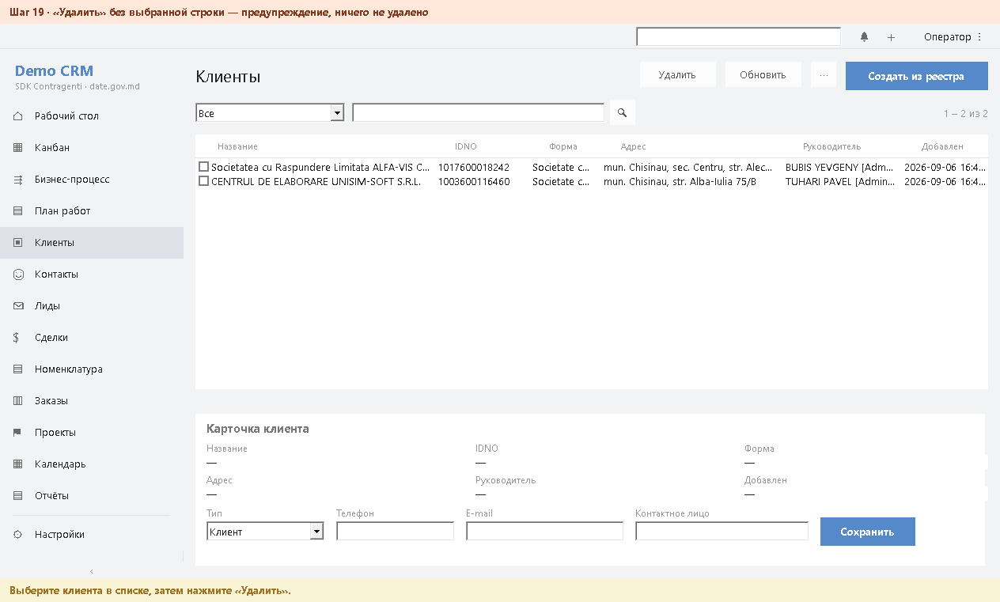
20«Удалить» с выбранной строкой — просьба подтвердить, база не тронута — OK
в базе 2, сообщение янтарное=True
Строка сообщений: Удалить «Societatea cu Raspundere Limitata ALFA-VIS COM»? Нажмите «Удалить» ещё раз для подтверждения.
после шага: 20_delete_confirm_ask.png
{kind=link}
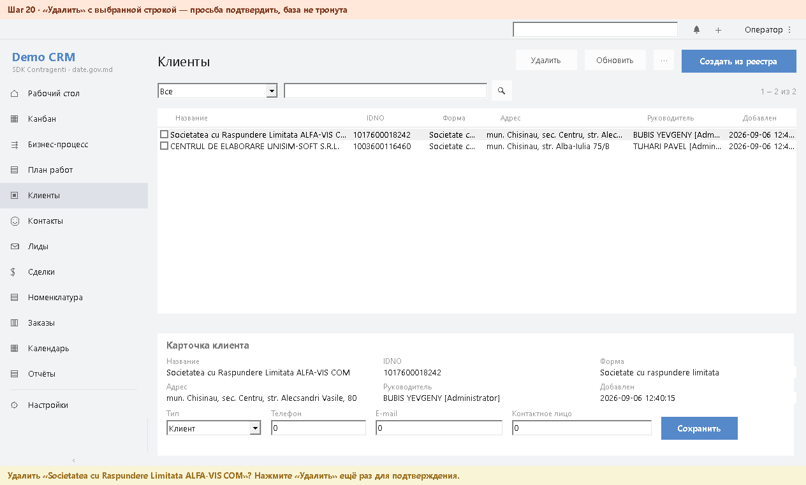
21Повторное «Удалить» — клиент ALFA-VIS удалён (останется UNISIM) — OK
в базе 1, в списке 1, сообщение зелёное=True
Строка сообщений: Удалён клиент «Societatea cu Raspundere Limitata ALFA-VIS COM». Записей: 1
после шага: 21_delete_done.png
{kind=link}
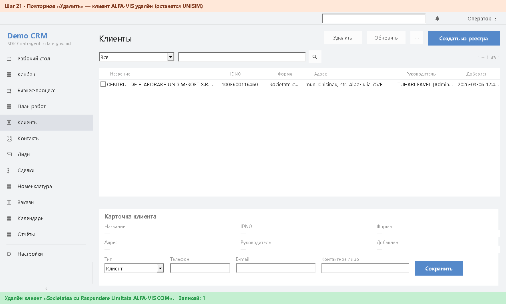
22Фильтр «ALFA-VIS COM» введён — по нему SDK запустит Contragenti — OK
launcher: F:\grok\contragents data gov\company_search.py
Строка сообщений: Фильтр «ALFA-VIS COM»: показано 0 из 1
после шага: 22_sdk_filter.png
{kind=link}
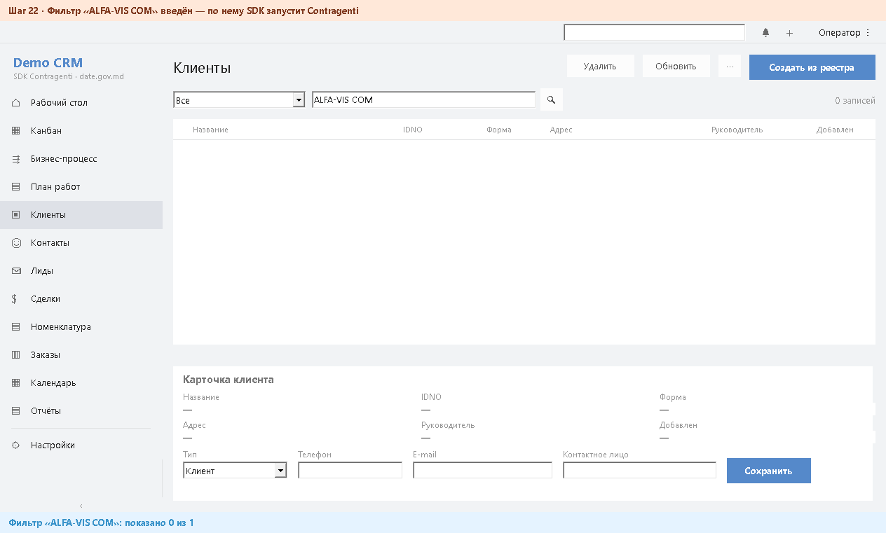
23Реальный вызов SDK: Contragenti запущен, нашёл ALFA-VIS (кэш date.gov.md или портал) и вернул XML-карточку — OK
ожидание 0 с, снимков во время работы 2, в базе 1 → 2, сообщение зелёное=True;
Строка сообщений: Добавлен клиент: Societatea cu Răspundere Limitată ALFA-VIS COM (IDNO 1017600018242)
во время работы SDK: 23_sdk_3_contragenti_results.png

во время работы SDK: 23_sdk_4_contragenti_card_return.png

после шага: 23_sdk_added.png
{kind=link}
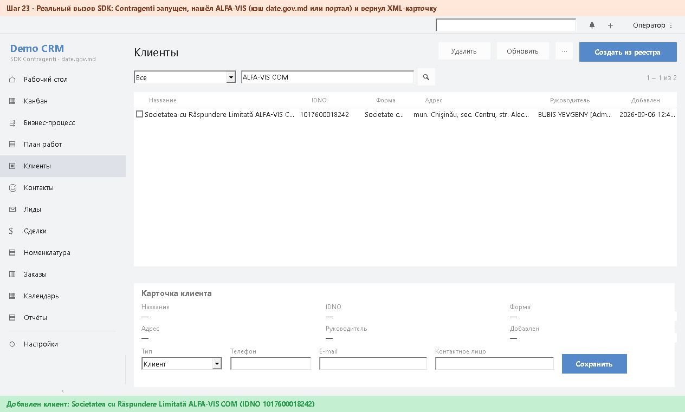
24Карточка из Contragenti в списке CRM (адрес, форма, администратор — данные реестра) — OK
в списке 2
Строка сообщений: Добавлен клиент: Societatea cu Răspundere Limitată ALFA-VIS COM (IDNO 1017600018242)
после шага: 24_sdk_list.png
{kind=link}
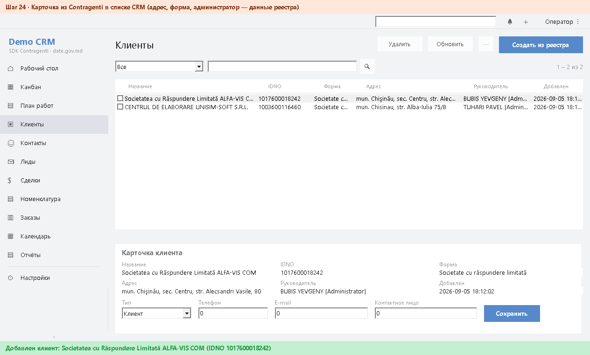
25Повторный вызов SDK — та же карточка отсечена как дубликат, база не выросла — OK
ожидание 0 с, в базе 2, сообщение янтарное=True;
Строка сообщений: Уже в базе: Societatea cu Răspundere Limitată ALFA-VIS COM (IDNO 1017600018242)
во время работы SDK: 25_sdk_3_contragenti_results.png
{kind=link}
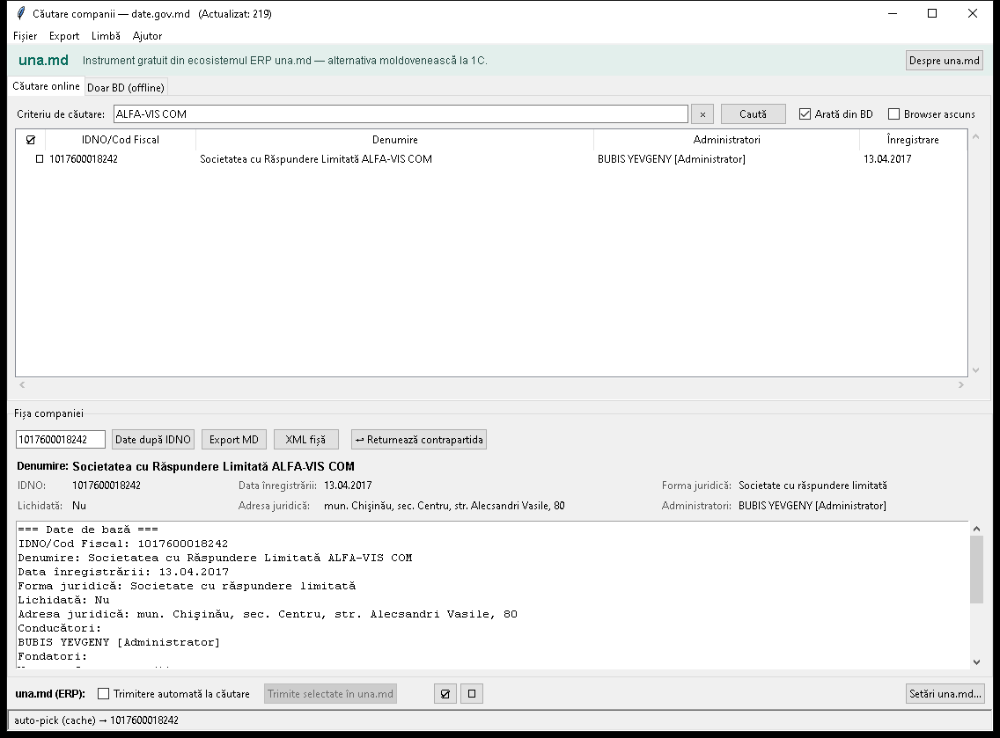
во время работы SDK: 25_sdk_4_contragenti_card_return.png

после шага: 25_sdk_duplicate.png
{kind=link}
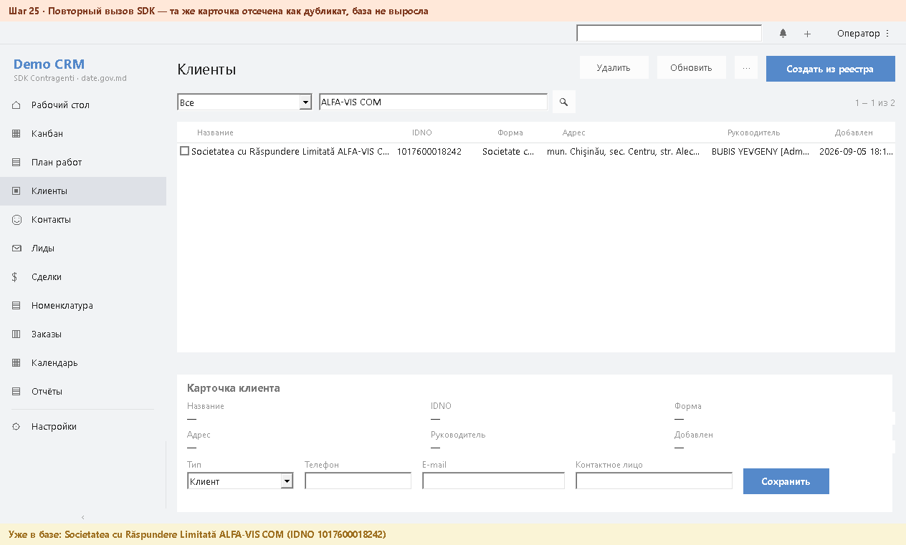
26Окно CRM не зависает, пока открыт Contragenti: обработчик ожидания отработал — OK
тактов ожидания 15 (по 200 мс), сообщение: Выбор отменён: Контрагент не выбран.
Строка сообщений: Выбор отменён: Контрагент не выбран.
после шага: 26_sdk_responsive.png
{kind=link}
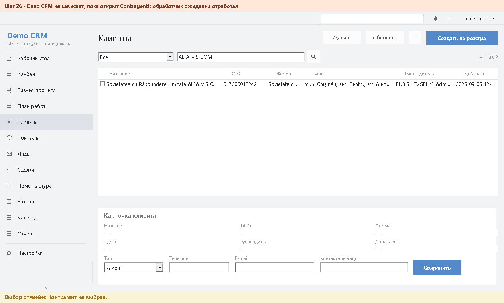
27Клиенты: в карточке сохранены тип, телефон, e-mail и контактное лицо — OK
Карточка клиента «Societatea cu Răspundere Limitată ALFA-VIS COM» сохранена.
Строка сообщений: Карточка клиента «Societatea cu Răspundere Limitată ALFA-VIS COM» сохранена.
после шага: 27_client_card.png
{kind=link}
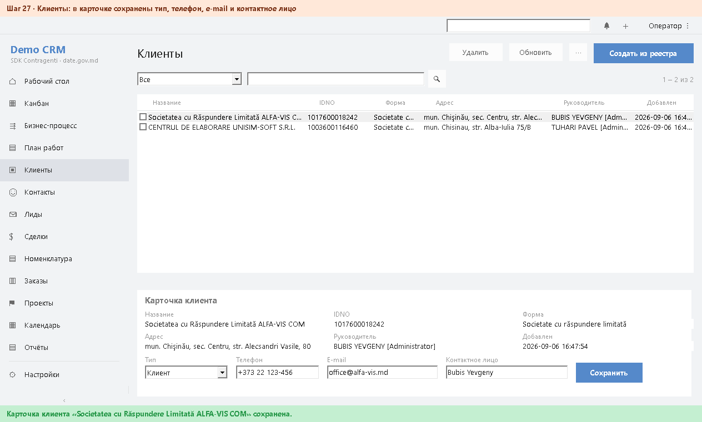
28Контакты: создан контакт «Yevgeny Bubis», привязан к клиенту ALFA-VIS — OK
контактов 1; Добавлено: контакт «Yevgeny Bubis».
Строка сообщений: Добавлено: контакт «Yevgeny Bubis».
после шага: 28_contact_new.png
{kind=link}
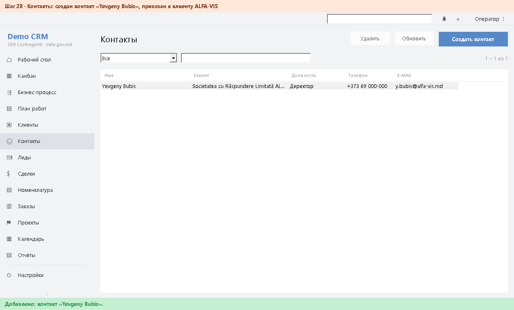
29Лиды: создан лид «Agro-Prim SRL» — в работе, источник «Выставка» — OK
лидов 1
Строка сообщений: Добавлено: лид «Ion Popescu».
после шага: 29_lead_new.png
{kind=link}
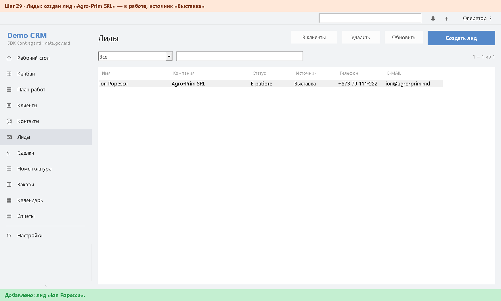
30Лиды: «В клиенты» — создан клиент Agro-Prim SRL, статус лида «Конвертирован» — OK
клиентов 2 → 3, статус лида: Конвертирован
Строка сообщений: Лид конвертирован: создан клиент «Agro-Prim SRL»
после шага: 30_lead_convert.png
{kind=link}
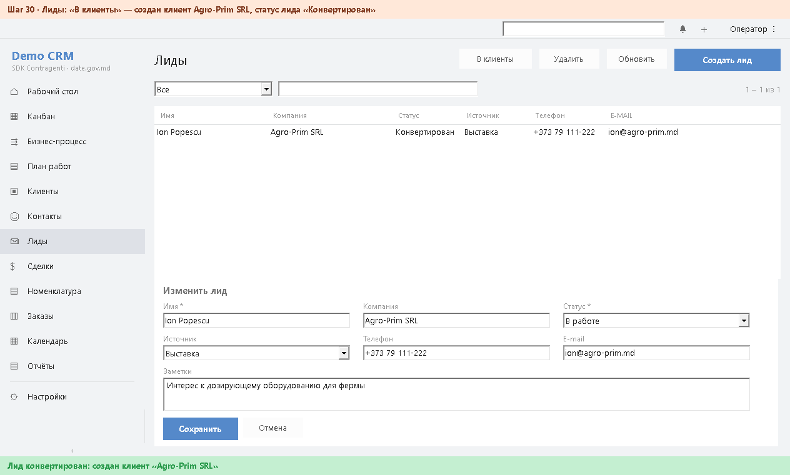
31Сделки: создана сделка 48 500 MDL для Agro-Prim на этапе «Предложение» — OK
сделок 1
Строка сообщений: Добавлено: сделку «Поставка дозирующей установки».
после шага: 31_deal_new.png
{kind=link}
32Сделки: этап переведён в «Выиграна» (воронка) — OK
этап в базе: Выиграна
Строка сообщений: Сохранено: сделку «Поставка дозирующей установки».
после шага: 32_deal_won.png
{kind=link}
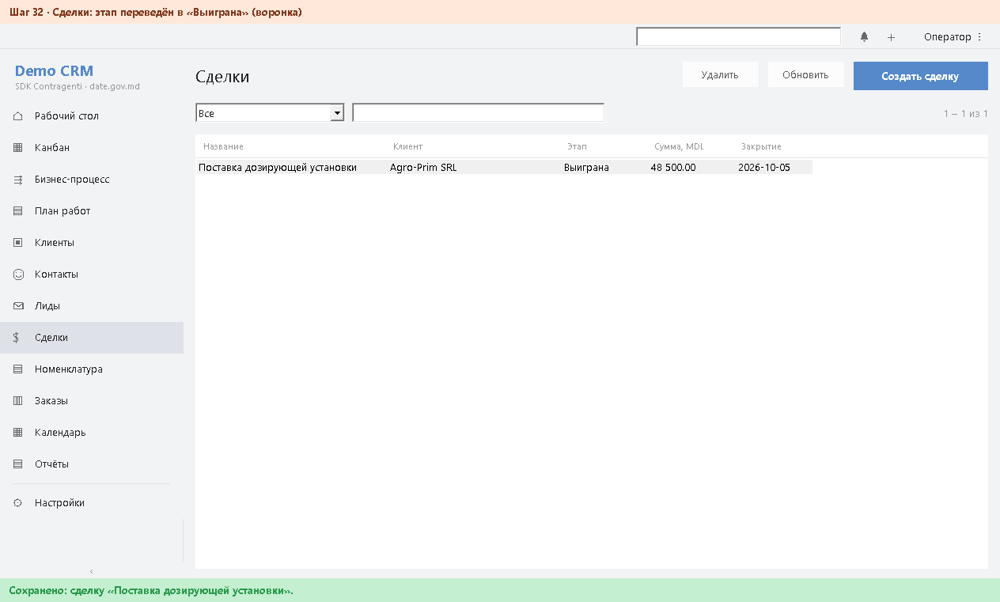
33Номенклатура: товар (остаток 5), услуга (час) и изделие собственного производства — OK
позиций 3
Строка сообщений: Добавлено: позицию «P-001».
после шага: 33_items.png
{kind=link}
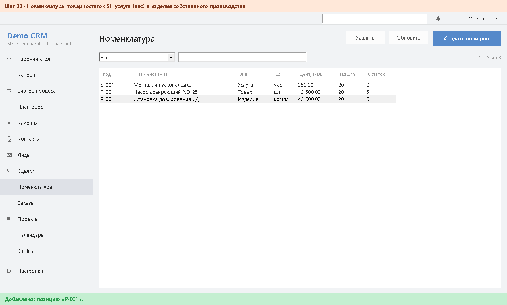
34Заказы: заказ на продажу №0001 — две строки (2 насоса + 8 ч монтажа), итого 27 800 MDL — OK
строк 2, итого 27800.00
Строка сообщений: Строка добавлена. Итого по заказу: 27 800.00 MDL
после шага: 34_order_lines.png
{kind=link}
35Заказы: статус «Выполнен» + «Провести» — остаток насосов списан 5 → 3 — OK
остаток T-001 = 3; Заказ проведён: списано со склада по 2 строкам
Строка сообщений: Заказ проведён: списано со склада по 2 строкам
после шага: 35_order_posted.png
{kind=link}
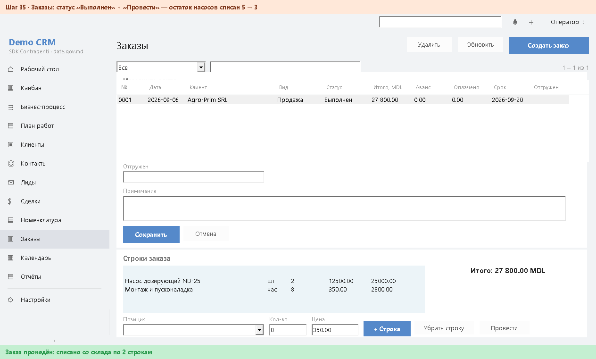
36Заказы: производственный заказ №0002 проведён — оприходовано 2 изделия (0 → 2) — OK
остаток P-001 = 2; Заказ проведён: оприходовано изделий по 1 строкам
Строка сообщений: Заказ проведён: оприходовано изделий по 1 строкам
после шага: 36_order_production.png
{kind=link}
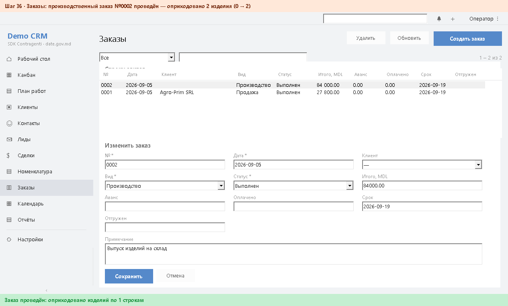
37Календарь: звонок (просрочен на 2 дня) и встреча через 3 дня — OK
открытых задач 2
Строка сообщений: Добавлено: задачу «Встреча: приёмка установки УД-1».
после шага: 37_tasks.png
{kind=link}
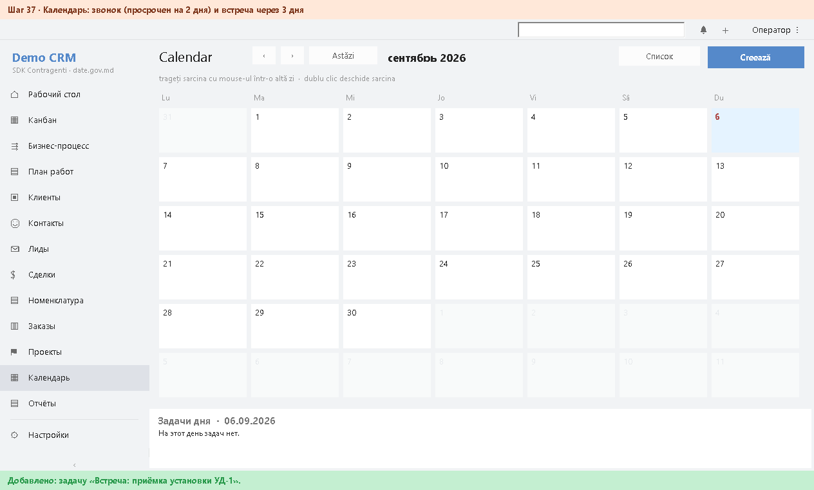
38Календарь: фильтр «Просроченные» — одна задача — OK
в списке 1
Строка сообщений: Фильтр: показано 1 из 2
после шага: 38_tasks_overdue.png
{kind=link}
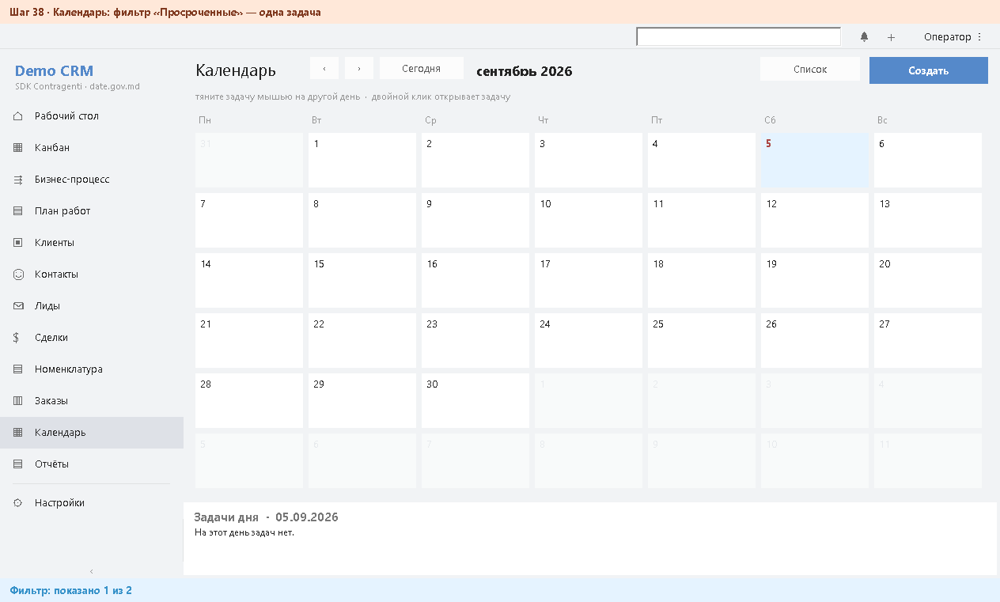
39Календарь: «Выполнено» — просроченная задача закрыта, список пуст — OK
в списке 0; Задача отмечена выполненной.
Строка сообщений: Задача отмечена выполненной.
после шага: 39_task_done.png
{kind=link}
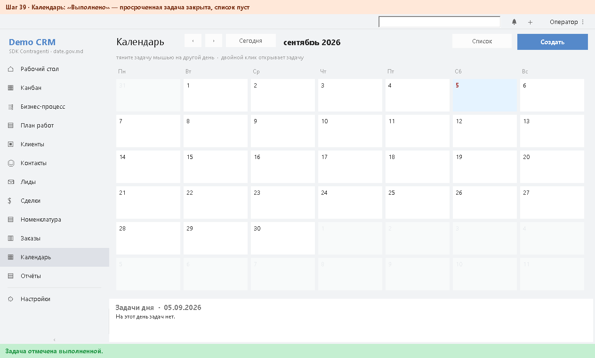
40Рабочий стол: плитки показывают процесс — два заказа исполнены и закрыты — OK
ожидает аванс=0, в работе=0, готово к отгрузке=2, ждём оплату=0, закрыто=0
Строка сообщений: Задача отмечена выполненной.
после шага: 40_workspace.png
{kind=link}
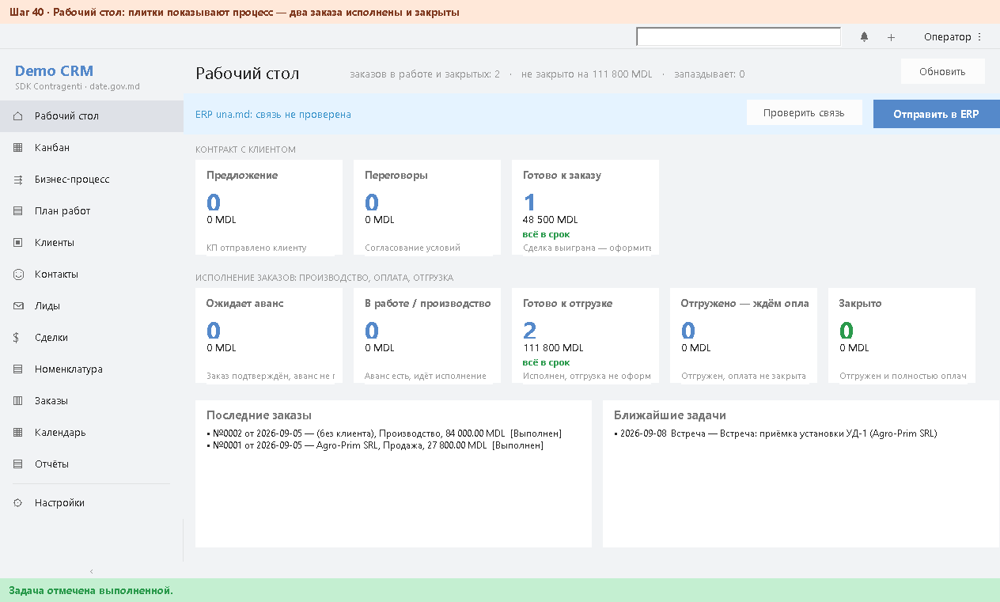
41Генератор тестовых данных: клиентов 15, контактов 20, лидов 12, сделок 21, номенклатуры 18, заказов 21 (строк 38), задач 24, проектов 10 (задач по проектам 100) — плитки процесса заполнились — OK
аванс=1, в работе=6, к отгрузке=4, ждём оплату=4, закрыто=3
Строка сообщений: Задача отмечена выполненной.
после шага: 41_seed_workspace.png
{kind=link}
42Плитка «Отгружено — ждём оплату» открывает «Заказы» с этим фильтром — OK
в списке 4, по условию этапа 4
Строка сообщений: Заказы, этап «Отгружено — ждём оплату»: 4
после шага: 42_tile_drilldown.png
{kind=link}
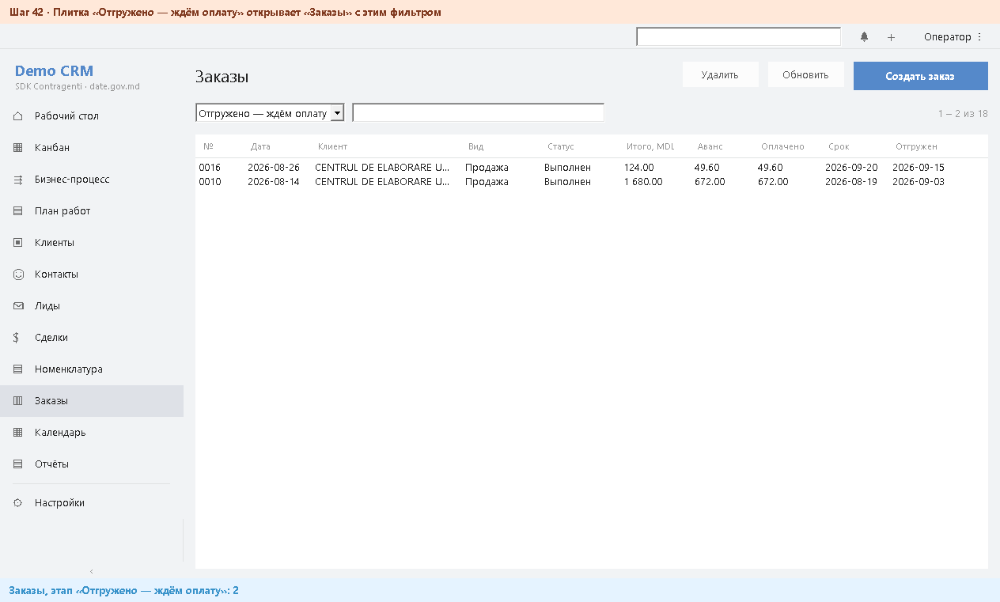
43Связь с ERP una.md по HTTP-API хаба: результат проверки виден в полосе ERP — OK
ERP недоступна: Error sending data: (12029) A connection with the server could not be established
Строка сообщений: ERP недоступна: Error sending data: (12029) A connection with the server could not be established
после шага: 43_erp_check.png
{kind=link}
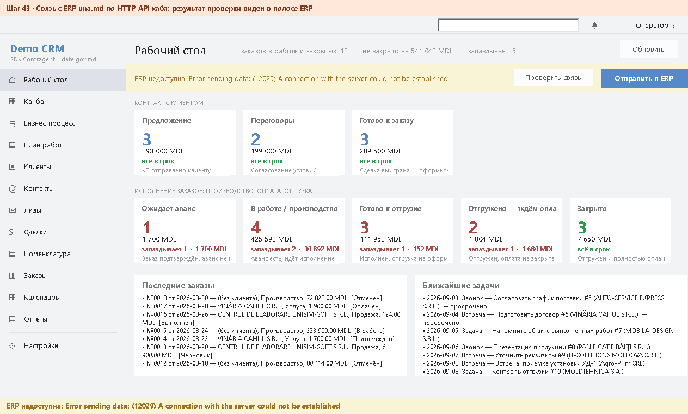
44Заказы на полном наборе: продажа / услуга / производство, все статусы — OK
в списке 23, в базе 23
Строка сообщений: ERP недоступна: Error sending data: (12029) A connection with the server could not be established
после шага: 44_seed_orders.png
{kind=link}
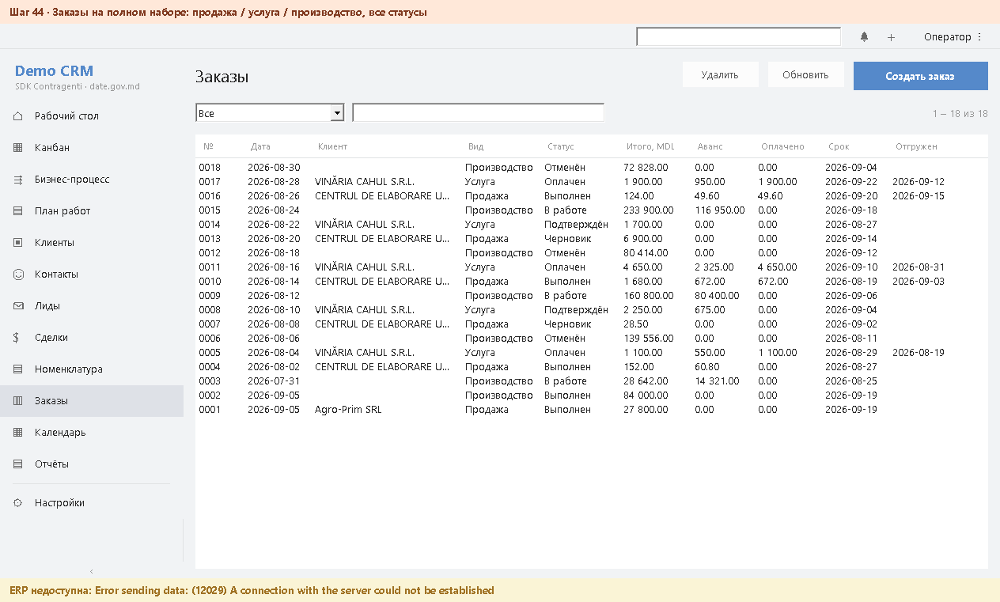
45Номенклатура на полном наборе: пресет «Нет на складе» — OK
без остатка 3 из 21
Строка сообщений: Фильтр: показано 3 из 21
после шага: 45_seed_items.png
{kind=link}
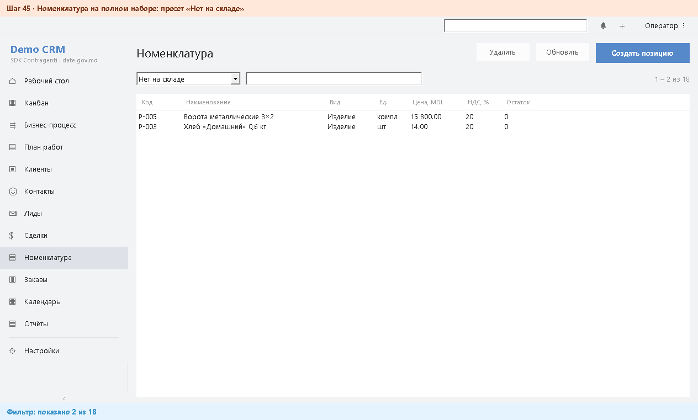
46Календарь на полном наборе: просроченные задачи выделены пресетом — OK
просроченных 20
Строка сообщений: Фильтр: показано 20 из 126
после шага: 46_seed_tasks_overdue.png
{kind=link}
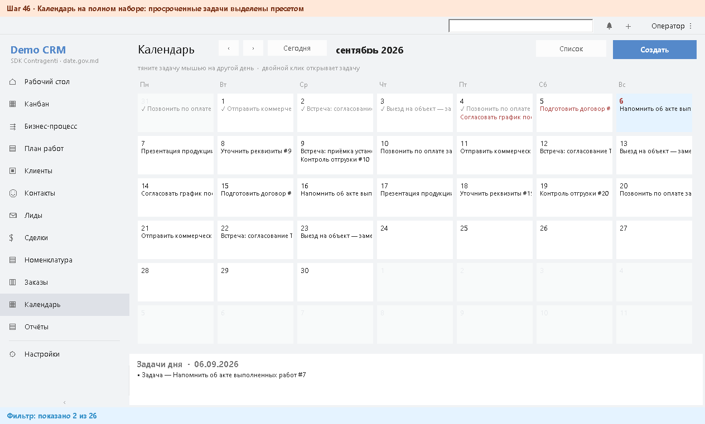
47Канбан «Заказы»: пять колонок процесса, карточки разложены по этапам — OK
колонок 5; по этапам: 1 / 6 / 4 / 4 / 3
Строка сообщений: Доска: Заказы — исполнение
после шага: 47_kanban_orders.png
{kind=link}
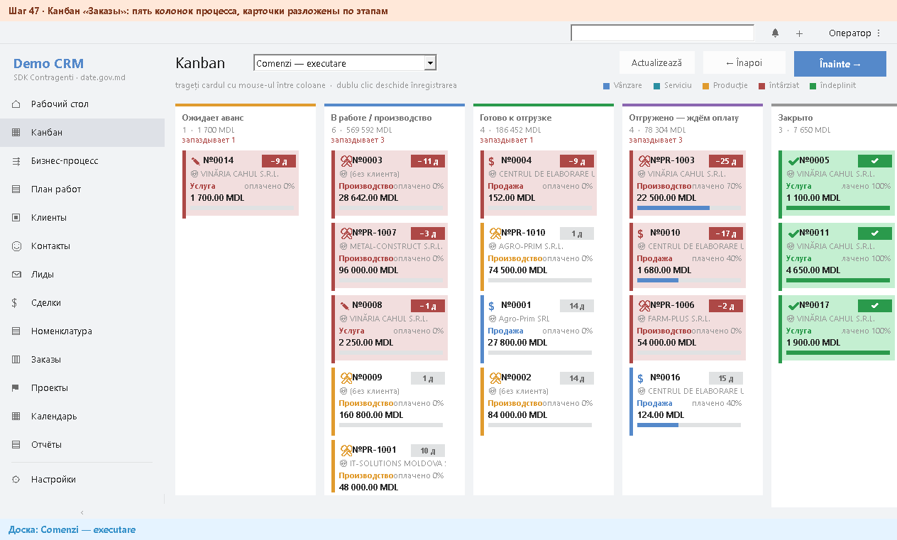
48Канбан: карточка перенесена «В работе» → «Готово к отгрузке», статус в базе изменён — OK
колонка 2, статус «Выполнен», этап 5
Строка сообщений: «№0003» → этап «Готово к отгрузке»
после шага: 48_kanban_move.png
{kind=link}
49Канбан: «← Назад» возвращает карточку на прежний этап — OK
колонка 1, этап 4
Строка сообщений: «№0003» → этап «В работе / производство»
после шага: 49_kanban_back.png
{kind=link}
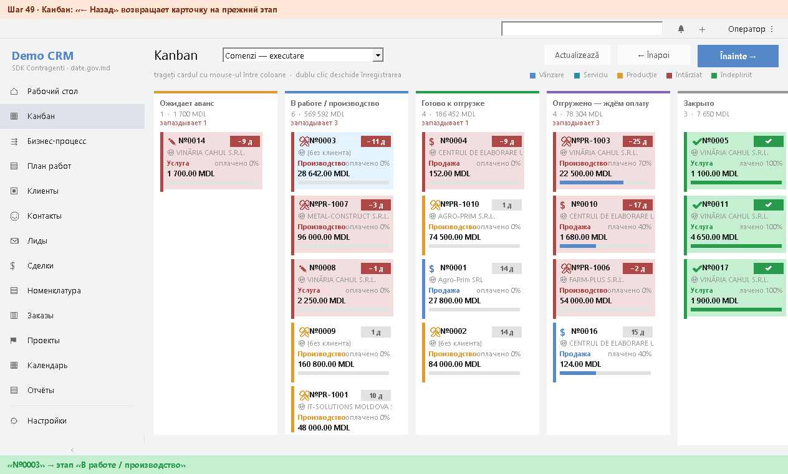
50Канбан: карточка перетащена мышью из «В работе» в «Отгружено — ждём оплату» — OK
в колонке «ждём оплату» 4 → 5, дата отгрузки «2026-09-06», этап 6
Строка сообщений: «№0003» → этап «Отгружено — ждём оплату»
после шага: 50_kanban_drag.png
{kind=link}
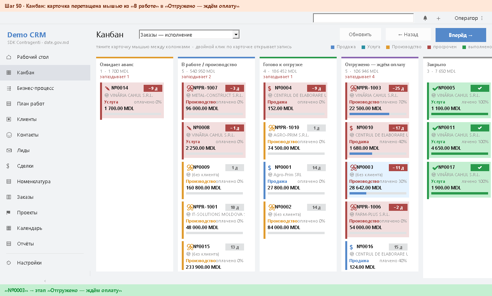
51Канбан: перетаскивание работает в обе стороны — дата отгрузки снята — OK
дата отгрузки «», этап 4
Строка сообщений: «№0003» → этап «В работе / производство»
после шага: 51_kanban_drag_back.png
{kind=link}
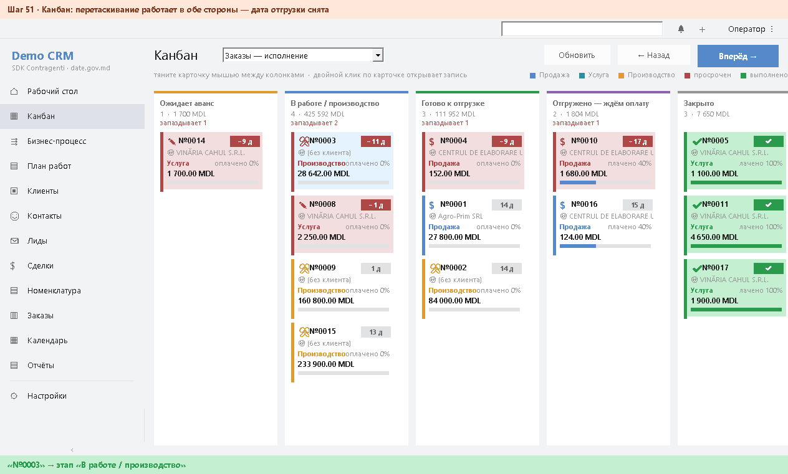
52Канбан «Задачи»: колонки по срокам — просрочено / сегодня / позже / выполнено — OK
колонок 4; просрочено 20, сегодня 3, позже 49, выполнено 54
Строка сообщений: Доска: Задачи — работы
после шага: 52_kanban_tasks.png
{kind=link}
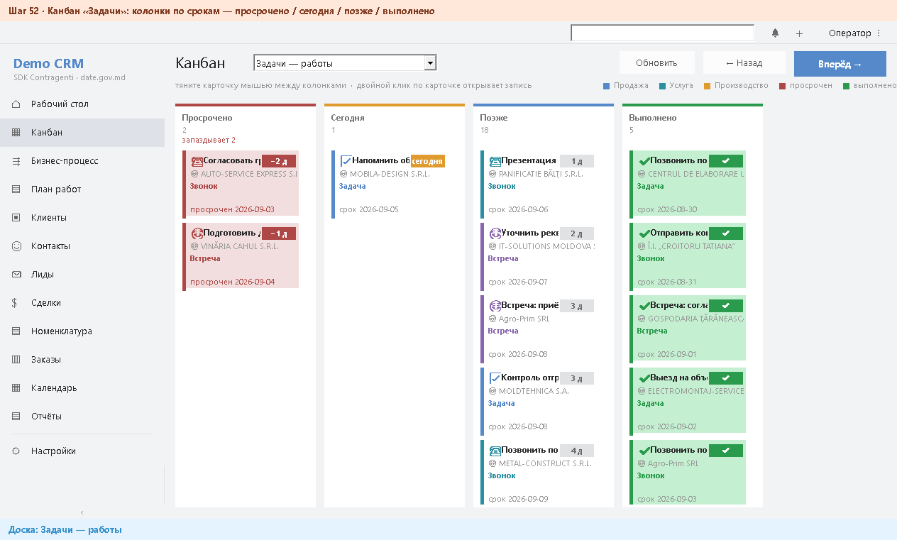
53Канбан: карточка информативна — значок вида, клиент, сумма, прогресс оплаты, бейдж срока — OK
«№0010» $ Продажа · CENTRUL DE ELABORARE UNISIM-SOFT S.R.L. · оплачено 672 из 1680 · бейдж «−17 д»
Строка сообщений: Доска: Заказы — исполнение
после шага: 53_kanban_card_info.png
{kind=link}
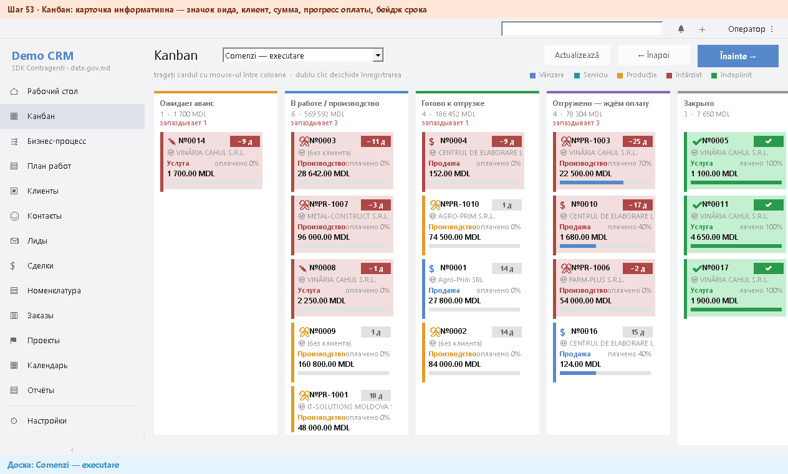
54Канбан: перенос анимирован — карточка перелетает в новую колонку и вспыхивает — OK
кадров анимации 17, этап 4
Строка сообщений: «№0014» → этап «В работе / производство»
после шага: 54_kanban_anim.png
{kind=link}
55Бизнес-процесс: схема «Сделка → заказ → оплата» из processes.json — дорожки, узлы, развилки, стрелки — OK
процессов 3, узлов 13, связей 14
Строка сообщений: «№0014» → этап «Ожидает аванс»
после шага: 55_process_scheme.png
{kind=link}
56Бизнес-процесс: щелчок по этапу «В работе» показывает те же карточки, что колонка канбана — OK
узел «В работе / производство»: карточек 6, в базе на этапе 6, запаздывает 3
Строка сообщений: Этап «В работе / производство»: 6 карточек, запаздывает 3
после шага: 56_process_node_click.png
{kind=link}
57Бизнес-процесс: карточка перетащена мышью на этап «Готово к отгрузке» — этап в базе изменён — OK
на этапе «готово» было 4, стало 5; этап заказа 5; кадров анимации 17
Строка сообщений: «№0003» → этап «Готово к отгрузке»
после шага: 57_process_drag.png
{kind=link}
58Бизнес-процесс: описание этапа отредактировано и сохранено обратно в JSON — OK
файл processes_test.json, 23281 байт, описание «Заказ подтверждён, выставлен счёт на ава…»
Строка сообщений: Описание этапа «Ожидает аванс» сохранено в processes_test.json.
после шага: 58_process_desc_saved.png
{kind=link}
59Календарь месячной сеткой: задачи разложены по дням — OK
месяц «сентябрь 2026», задач в месяце 66, сегодня 4
Строка сообщений: Описание этапа «Ожидает аванс» сохранено в processes_test.json.
после шага: 59_calendar_month.png
{kind=link}
60Календарь: задача перетащена мышью на три дня вперёд — OK
срок в базе «2026-09-09», на дне 09.09 задач 5 → 6
Строка сообщений: Задача «Напомнить об акте выполненных работ #7» перенесена на 09.09.2026.
после шага: 60_calendar_drag.png
{kind=link}
61Календарь: листание месяцев кнопками ‹ › — OK
следующий «октябрь 2026», текущий «сентябрь 2026»
Строка сообщений: Задача «Напомнить об акте выполненных работ #7» перенесена на 09.09.2026.
после шага: 61_calendar_next_month.png
{kind=link}
62План работ (Гант): производственные заказы и их операции на шкале времени — OK
строк 24, из них работ 15, просрочено заказов 4; период 06.07.2026 — 22.09.2026
Строка сообщений: План работ: Производство · строк: 24 (работ: 15), просрочено: 4 · 06.07.2026 — 22.09.2026
после шага: 62_gantt_production.png
{kind=link}
63План работ: полоса заказа перетащена мышью на 5 дней вперёд — даты в базе сдвинулись — OK
было 08.07–12.08, стало 13.07–17.08 (в базе 2026-07-13)
Строка сообщений: №PR-1003 Производство: сдвинут — 08.07–12.08 → 13.07–17.08 (+5 дн.)
после шага: 63_gantt_drag_move.png
{kind=link}
64План работ: за правый край полосы растянут только срок, дата заказа не тронута — OK
срок 17.08 → 24.08, начало осталось 13.07
Строка сообщений: №PR-1003 Производство: изменён срок — 13.07–17.08 → 13.07–24.08 (+7 дн.)
после шага: 64_gantt_drag_resize.png
{kind=link}
65План работ: фильтр «Все заказы» — строк становится больше — OK
строк 52, работ 32
Строка сообщений: План работ: Все заказы · строк: 52 (работ: 32), просрочено: 9 · 11.07.2026 — 25.09.2026
после шага: 65_gantt_all.png
{kind=link}
66Проекты: панно с логотипом, выжиг поздравлений, стенды, медали — тендеры с авансом и без — OK
проектов 10; в производстве 2, тендеров 1, проиграно 1, запаздывает 2
Строка сообщений: План работ: Все заказы · строк: 52 (работ: 32), просрочено: 9 · 11.07.2026 — 25.09.2026
после шага: 66_projects_list.png
{kind=link}
67Проект → «Задачи проекта»: доска задач по этапам — новая / в работе / ожидание / проверка / готово — OK
проект 1, колонок 5; новых 4, в работе 1, ожидание 0, проверка 0, готово 6
Строка сообщений: Проект: Панно с логотипом на стену 3×1,5 м (акрил, подсветка)
после шага: 67_project_tasks_board.png
{kind=link}
68Задача перетащена «Новая» → «В работе»: этап в базе изменён, флаг «выполнено» не тронут — OK
задача 34: этап «В работе»
Строка сообщений: «Контроль качества» → этап «В работе»
после шага: 68_task_drag_inwork.png
{kind=link}
69Задача перетащена в «Готово»: флаг «выполнено» выставлен сам — этап и флаг суть одно состояние — OK
задача 34: этап «Готово», done = 1
Строка сообщений: «Контроль качества» → этап «Готово»
после шага: 69_task_drag_done.png
{kind=link}
70Канбан «Проекты»: девять этапов от тендера до закрытия, проигранные тендеры отдельно — OK
колонок 9; тендер 1, договор 1, аванс 1, дизайн 1, производство 2, сдача 1, оплата 1, закрыт 1, проигран 1
Строка сообщений: Доска: Проекты — этапы
после шага: 70_kanban_projects.png
{kind=link}
71Проект перетащен «Тендер» → «Договор» (тендер выигран): этап в базе изменён — OK
проект 9: этап «Договор»
Строка сообщений: «Наградные доски и кубки с гравировкой (конкурс)» → этап «Договор»
после шага: 71_kanban_project_drag.png
{kind=link}
72Бизнес-процесс «Проект: тендер → аванс → производство → сдача → оплата»: узел «Производство» показывает его проекты — OK
узлов 11, связей 12; в производстве 2, запаздывает 1
Строка сообщений: Этап «Производство»: 2 карточек, запаздывает 1
после шага: 72_process_project.png
{kind=link}
73План работ «Проекты и задачи»: проект и его шаги по датам, готовые зелёным, просроченные красным, стрелки «после задачи» — OK
строк 107, из них задач 98, просроченных проектов 2; период 06.07.2026 — 18.10.2026
Строка сообщений: План работ: Проекты и задачи · строк: 107 (работ: 98), просрочено: 2 · 06.07.2026 — 18.10.2026
после шага: 73_gantt_projects.png
{kind=link}
74План работ: задача проекта перетащена мышью на 3 дня — план и срок в базе сдвинулись — OK
задача 48: срок 2026-07-08 → 2026-07-11
Строка сообщений: Подготовка тендерной заявки: сдвинут — 08.07–08.07 → 11.07–11.07 (+3 дн.)
после шага: 74_gantt_task_drag.png
{kind=link}
75Отчёт «Проекты: тендеры, авансы, задачи» — предпросмотр и выгрузка в Excel и PDF — OK
строк 11; projects_2026-09-06.xlsx, projects_2026-09-06.pdf
Строка сообщений: Отчёт «Проекты: тендеры, авансы, задачи» выгружен: F:\grok\contragents data gov\crm_delphi\reports\projects_2026-09-06.pdf
после шага: 75_report_projects.png
{kind=link}
76Отчёты: «Процесс исполнения заказов» — предпросмотр по этапам — OK
строк 9, колонок 6
Строка сообщений: Отчёт «Проекты: тендеры, авансы, задачи» выгружен: F:\grok\contragents data gov\crm_delphi\reports\projects_2026-09-06.pdf
после шага: 76_report_process.png
{kind=link}
77Выгрузка отчёта в Excel и PDF — OK
process_2026-09-06.xlsx (3227 байт, zip=True); process_2026-09-06.pdf (1090649 байт, %PDF=True)
Строка сообщений: Отчёт «Процесс исполнения заказов» выгружен: F:\grok\contragents data gov\crm_delphi\reports\process_2026-09-06.pdf
после шага: 77_report_export.png
{kind=link}
78Отчёт «Дебиторская задолженность»: строки есть, выгружен в оба формата — OK
строк 5; receivables_2026-09-06.xlsx, receivables_2026-09-06.pdf
Строка сообщений: Отчёт «Дебиторская задолженность» выгружен: F:\grok\contragents data gov\crm_delphi\reports\receivables_2026-09-06.pdf
после шага: 78_report_receivables.png
{kind=link}
{kind=link}
{kind=link}